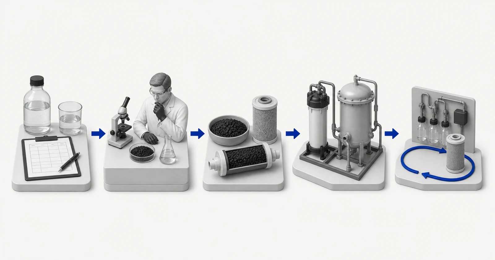

Đánh giá kỹ thuật về than hoạt tính
Không chọn trước sản phẩm than. Hãy cung cấp vấn đề cần xử lý, báo cáo hiện tại, yêu cầu vận hành về thủy lực và thông tin về thiết bị. Yuchen Water sẽ xác định hướng lựa chọn vật liệu, bằng chứng còn thiếu và những câu hỏi liên quan đến thiết bị.

- Báo cáo phân tích nước hoặc lưu chất công nghệ
- Rà soát rủi ro kỹ thuật và bằng chứng
- Định hướng lựa chọn vật liệu than hoạt tính
- Lựa chọn thiết bị và phương án giám sát phù hợp
- Hỗ trợ vận hành và thay thế
Hình minh họa khái niệm. Không phải kết quả thử nghiệm, chứng nhận sản phẩm hoặc bản vẽ kỹ thuật.
Thông tin cần gửi
Gửi báo cáo về nước hoặc chất lỏng công nghệ, các hợp chất mục tiêu, lưu lượng và điều kiện vận hành để đánh giá vật liệu than hoạt tính và hỗ trợ liên quan đến thiết bị.
Nếu không có báo cáo mang tính đại diện và mục tiêu được xác định rõ, chỉ có thể đưa ra hướng dẫn sơ bộ. Việc lập kế hoạch cuối cùng về vật liệu, thiết bị và dịch vụ cần có bằng chứng đã được xem xét.
Câu hỏi thường gặp
Tôi có thể gửi báo cáo chưa đầy đủ không?
Có. Hãy đánh dấu rõ các giá trị còn thiếu. Phản hồi sẽ vẫn mang tính sơ bộ và có thể đề xuất các phân tích bổ sung cần thiết.
Yuchen Water có lựa chọn sản phẩm chỉ dựa trên TDS không?
Không. TDS không xác định yêu cầu xử lý bằng hấp phụ. Có thể cần thông tin về các hợp chất mục tiêu, chất hữu cơ, chất oxy hóa, các hạt, lưu lượng và điều kiện thiết bị.
Có thể bao gồm hỗ trợ về thiết bị không?
Có. Yuchen Water có thể trao đổi về lõi lọc, vỏ lọc, bình lọc, công đoạn tiền xử lý và hỗ trợ kỹ thuật liên quan sau khi hiểu rõ yêu cầu xử lý.